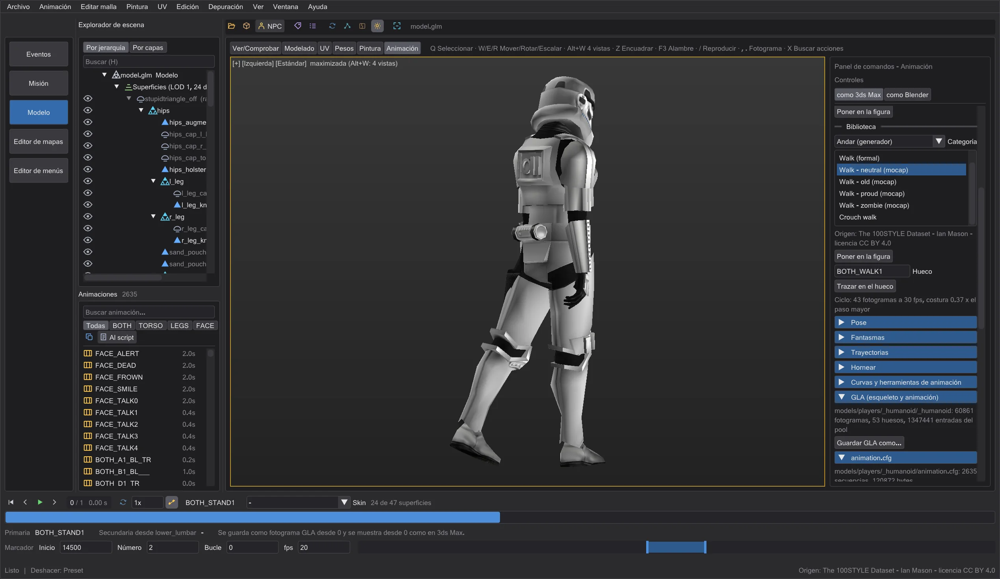

Pestaña Model: importar animaciones y biblioteca de presets
Trae movimiento de otros programas a tu figura (un FBX de Mixamo que hayas descargado tú, glTF, captura BVH o COLLADA) y usa la biblioteca de presets libre (Quaternius, 100STYLE) con un clic.
Importar una animación#
En el área Animation de la pestaña Model elige Importar animación (FBX, glTF, BVH, DAE) (en el grupo Transferir (retargeting) del panel de la derecha, en el menú Animation > Retargeting, en el clic derecho de la vista (Control Rig > Retargeting) o en la búsqueda (X, F3 en modo Blender)). JK Studio lee el esqueleto y las claves del archivo, reconoce esqueletos conocidos (Mixamo/HumanIK, Biped, CAT) y asigna sus cadenas, pasa el movimiento a tu figura y lo reproduce: un FBX de Mixamo está en tu figura con un clic. Cada animación del archivo es una secuencia del origen. Después Trazar en el hueco la escribe en el hueco que elijas, como en todo retargeting.
Unidades, ejes y fotogramas#
Cada formato trae sus reglas y JK Studio las toma del archivo: FBX indica en sus ajustes globales los ejes arriba, delante y lateral y su unidad (centímetros por unidad); glTF es siempre metros con +Y arriba y el frente hacia +Z; COLLADA indica unidad y eje arriba; BVH no indica ninguna, así que arriba es el eje a lo largo del que está el cuerpo y la izquierda sale de los nombres de los huesos. Todo se gira al marco del juego (Z arriba, la figura mira hacia -Y). Los fotogramas por segundo son los del archivo (modo de tiempo FBX, Frame Time de BVH); glTF y COLLADA no tienen, ahí salen de la separación de las claves. Bajo el origen el panel muestra lo leído. Los tamaños distintos no importan: el retargeting escala los pasos con la longitud de las piernas.
La biblioteca de presets#
El grupo Presets empieza con la biblioteca: elige una categoría, haz clic en una animación (un doble clic la muestra al instante en tu figura, como Vista previa en la figura), revisa el Hueco de destino (se sugiere un nombre del juego como BOTH_WALK1) y pulsa Poner en la figura (retarget). Las ocho categorías del diseño están siempre; una sin preajustes muestra una nota breve. En Andar y Correr la lista tiene además Andar (generado) y Correr (generado) del generador propio (Velocidad y Balanceo de brazos bajo la lista, el resto con Generador). Los bucles están cortados a un ciclo sin costura y se reproducen en el sitio como los pasos del juego. Las animaciones son de Quaternius (Universal Animation Library, CC0) y de "The 100STYLE Dataset - Ian Mason" (CC BY 4.0, captura de movimiento); cada entrada indica origen y licencia, todo figura en data/presets/CREDITS.txt y en la ventana Acerca de. JK Studio las incluye en sus propios esqueletos, nunca con un archivo del juego.
